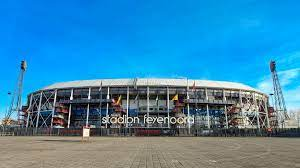
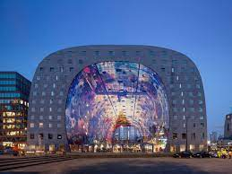

Stadion De Kuip is al sinds 1937 de thuishaven van de Rotterdamse voetbalclub Feyenoord. Voorzitter Leen van Zandvliet vatte destijds het ambitieuze plan op voor een stadion van 65.000 toeschouwers, in die tijd revolutionair voor Nederland. De Rotterdamse architecten Brinkman en Van der Vlugt, de ontwerpers van de Van Nellefabriek, ontwierpen vervolgens een stadion met twee tribunes boven elkaar, waarbij het publiek dicht op het veld zit. Naast een stalen draagconstructie bestaat het gebouw voornamelijk uit beton en glas. Deze zakelijke, functionele architectuur sluit achteraf gezien goed aan bij de geen-woorden-maar-daden mentaliteit van Feyenoord. In 1994 is het stadion ingrijpend gerenoveerd. Inmiddels heeft De Kuip de status van gemeentelijk monument.
Een overdekte markthal kom je in meer wereldsteden tegen, maar door de combinatie met woningen heeft Rotterdam een wereldprimeur. De appartementen zijn in hoefijzervorm over de versmarkt gedrapeerd. In de hal bevindt zich de markt met zo’n 100 vers units, circa 15 food shops en diverse restaurants met daaronder een supermarkt en vierlaagse parkeergarage. Wie tussen de marktkramen door loopt en omhoog kijkt, ziet het kunstwerk ‘Horn of plenty’ (Hoorn des overvloeds) van Arno Coenen en Iris Roskam. Door dit grootste kunstwerk van Nederland wordt de Markthal ook wel de Nederlandse versie van de Sixtijnse Kapel genoemd.
